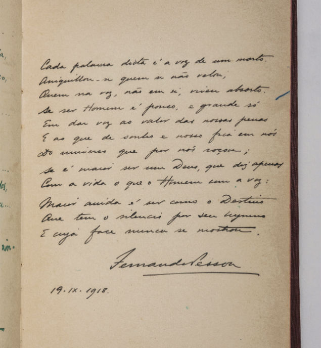

Voz
A sujeira da alma, meu imperio de decepções
O lírico é a minha voz
O grito de desespero entre as linhas
A escuridão é minha casa
Pensamentos desordeiros
Solidão na multidão
A vida tem sido um desespero
"Nada realmente importa então"
Não posso falar
Não posso calar
A dor me consome
Somente o lírico consegue gritar